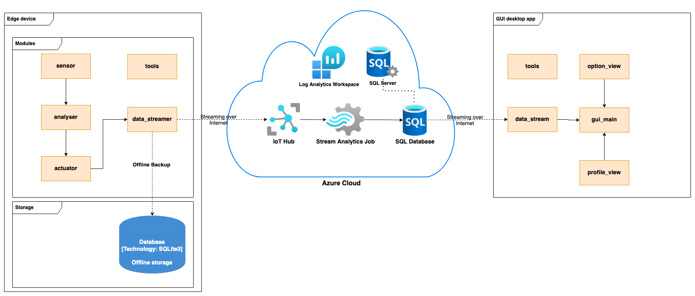
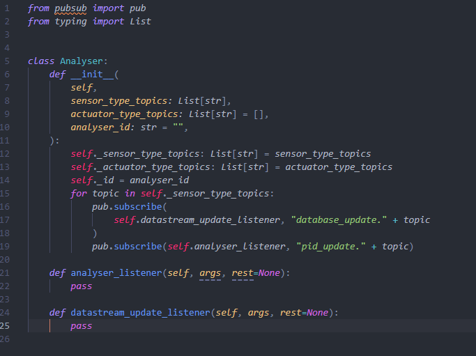

Overview
Overall, our software is decomposed into four aspects:
- Sensor and Actuators
- Data Analysis
- Cloud Based Solution
- GUI
By separating the system into these four categories, we were able to allow members to implement sections asynchronously to increase productivity. In addition, this allows individual components to be more maintainable when isolated into their category.
These are then combined based on the following diagram from the SYSTEM DESIGN section:

Here is the structure of our GitHub Repository. All the back end code is implemented in the src folder and
all the front end code is implemented in the gui_code folder. We have separated these two as the folders
will be on different devices when deploying the system. The src should be copied onto the Raspberry Pi for
data collection and actuation generation, and the gui_code should be downloaded onto the user’s PC.
Sensors and Actuators
Firstly, we set up a skeleton for both Sensors and Actuators, so that we can
follow that pattern, speed up the implementation process and make the system clearer.
The Actuator Skeleton include an __init__ function to initialize and set up everything from
the pins needed to the PWM channels and frequencies.
Then we have the activate function which will active the actuators.
Finally, the actuate function is implemented to power the actuators. Here’s the dummy code.
For the led strips and fans, as we used onboard hardware PWM pin, we can simply set the PWM pin, data and
frequency. The Linux driver will take care of the rest for us. For the led strips, we send the analyzer
message straight to the actuator. We also have another common component: status_listener. This function
will read the current actuator value which will be included in the publisher-subscriber message for the
GUI and database to receive.
Due to the non-linear water flow rate of the DC motor pump with a linear voltage change in the circuit,
we decided to record the time of pumps being on per a certain time period, which is sent by our handler
to the Actuator class and our pump class only need to turn the pump on or off at the moment it receives
the message.
Sensor classes have a similar skeleton code. They will set things up in the init function and there should
be a collect function that reads from the sensor and sends messages through the publisher-subscriber pattern.
There is also a disable function that can turn the sensor off. This is all we need for a basic sensor. e.g.
DHT11 humidity and temperature sensor.
Some sensors record input values in the form of resistance. We will need to convert those values to a standard unit for later use. For example, a light sensor outputs its resistance so that we will need to convert it into lux.
Data Analysis
We have two versions for analysers: the first is a simple relay version and the second is a PID controlled version. All analysers include one init, one listener and one datastream update listener.

In the __init__ function, it shall include all factors to state and subscribe to each pubsub packages.
Such as:
In the analyser_listener function, it initially receives sensor values through pubsub, and then analyses
the value obtained with PID or simple relay analysis. Finally, it will send messages with its corresponding
actuator value.

In datastream_update_listener function, it does same thing with datastream_listener function but it will
be send to database instead of actuators.
Cloud Based Solution
Azure Services
Connection from Raspberry Pi to Azure:
- The Raspberry Pi registers itself with IoT Hub using the unique Key for that device.
- The IoT Hub verifies the connection and the connection is established.
- The Raspberry Pi sends JSON messages to the IoT Hub.
- The IoT Hub verifies the messages.
- StreamAnalytics Job requests the data from the IoT Hub (as IoT Hub is registered as its input), and receives the data.
- StreamAnalytics Job unpacks the JSON data and inserts it into an SQL Insert query.
- SQL Insert query is run and inserts data into the registered output for the StreamAnalytics Job: the SensorData SQL Database.

Connection Azure to GUI app:
- On the GUI app side: PyODBC library uses Microsoft ODBC 17 Driver to establish a connection with the Azure DB (SensorData).
- The driver is used to forward the SQL queries from the GUI app and run them.
- The GUI app receives any responses from the Azure SQL Server and displays the received data.
The Publisher-Subscriber Pattern
The main loop of the program is fairly simple: every second it calls each sensor to
collect data and calls all actuators to act based on the current actuation values it received.
When the sensors are called to collect, by default they send a message under the pid_update.sensor
topic, which is listened in on by the objects from the analyser module. These modules in turn send
out messages on the pid_update.actuator topic, apart from the moisture subsystem. Finally, the
actuators listen in on the pid_update.actuator topic and update their actuation values based on
the messages received.
The difference with the moisture subsystem is that its analyser listens in on both the water level
and soil moisture sensor outputs, and considers both inputs. It then sends out a message on
signal_handler.pump_control topic, which is picked up by the signal_handler module. That module in
turn sends out control messages to the water pump actuator, as usual, using an asynchronous timing
method utilising Alarm Signal, from the python Signal module.
Additionally, every 5 seconds (so every 5th interation), it calls the sensors to collect data,
but this time to send the data under a different topic: database_update.sensor. The data sent in
this cycle doesn’t cause the actuators to change their actuation values, but gets picked up by the
data_streamer module, and depending on the selected streamer: either saves data locally on a DB
using SQLite3 or sends the data over to Azure IoT Hub for further processing.
GUI
Our final UI is implemented using Python Tkinter. The code is structured to have an
option_view, profile_view and settings_view to
separate different page types into their modules. The assets folder contains the image
files needed for display, and the tools folder contains files for storing global constant
values and for managing loading the configuration file.
The Option View
The option_view folder contains option_page.py for the OptionPage class that
displays the following:
Here is the structure of the profile_view folder:
The scale is displayed using the Tkinter Canvas feature, drawing each rectangle scaled corresponding to the values set for each subsystem.
The red zones represent critical regions where the sensor value is far from the desired set point. The amber zones show poor regions where the value is a little far from the desired setpoint, and the green zones show the current value is within the desired region. The thick black line indicates which zone the current value lies, and each threshold is labelled for clarity.
In addition, the graph feature is displayed with the matplotlib library, showing the latest n values
over time. Time is represented as hours - for example, ‘22:22:35’ represents the time 35 seconds into
10:22 pm.
The specific FuncAnimation library allows the graph to be animated and updated every 5 seconds.
Simultaneously, as the graph changes, the sensor label value, sensor scale, actuator label value and
suggestion also update appropriately.
The structure of the water level subsystem follows the same structure as the others with one extra frame to show water level, indicating whether or not the container should be refilled.
The water level scale indicates the amount of water present in the container by height percentage from the water level sensor. This value decreases whenever the pump is on and allows the user to know if there is enough water in the container.
Currently, the manual mode has not been implemented but the interface is structured to easily have this additional feature.
Settings Page
Another button on the option page is labelled ‘System Settings’, which takes us to this page:
Here the settings currently only contains plant profile settings, which allows the user to upload a config file for a specific plant. The system will only allowed the new file to replace current file if it is the correct format.
Explaining the Configuratioin File:
The sensor scale of a subsystem profile page is based on a list of thresholds that allow the system to display whether or not the current condition is optimal (green) , poor (amber) or critical (red).
For example, for the humidity subsystem, the current sensor scale values shows the upper bound to be
100 and the lower bound to be 0. These values are taken from
humidity_bound = [0,100] from the config file. The other thresholds are stored in
humidity_extr = [40, 50, 60, 75]. These values demonstrate:
- Lower critical range (red): between 0% and 40%.
- Lower poor range (amber): between 40% and 50%.
- Optimal range (green): between 50% and 60%.
- Upper poor range (amber): between 60% and 75%.
- Upper critical range (red): Between 75% and 100%.
There is a list of these two threshold lists for each of the four subsystems.
Here is a configuration file example in .ini format:
The management of the config file is stored in the tools folder. There should look like this:
The plant_profile_info.ini is the main file being accessed to obtain values. The file format is firstly
parsed and checked by the ConfigFileParser class and then values are extracted and stored as the class
attributes of the Config class, which is then passed on to the ProfileInformation class which provides
the values for GUI display.
The default_plant_profile_info.ini file is a default file used to reduce errors in case the current
plant_profile_info.ini is faulty. Whenever the app first starts up, the contents of default_plant_profile_info.ini
is copied onto plant_profile_info.ini to ensure the system is set up with a working file.